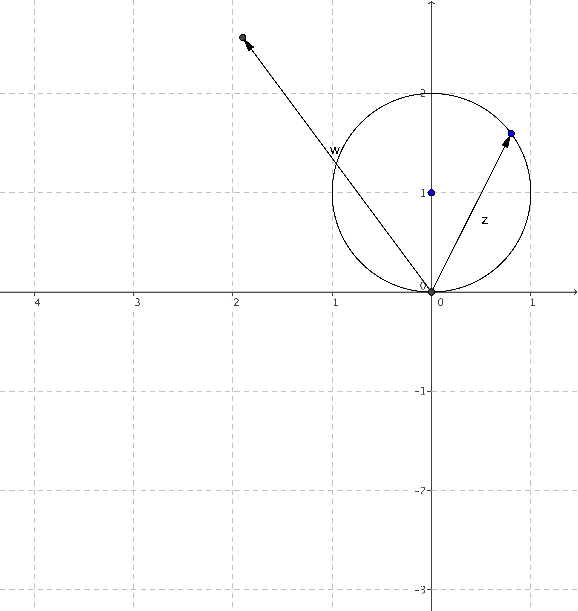
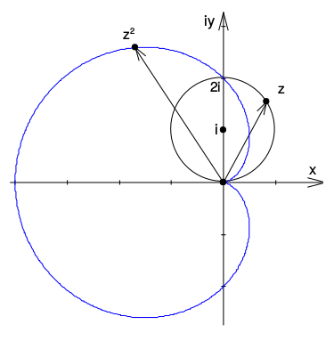

Aufgabe II.7
Auf welche Figur wird dieser Kreis durch $f(z)=z^2$ abgebildet?
Nutzen Sie dazu GeoGebra, um das Bild des Kreises zu erzeugen.

Nutzen Sie das Zusatzmaterial zur Erkundung
Beobachtung:
Wenn man den Kreis durch die Funktion $f(z) = z^2$ abbildet, entsteht eine herzförmige Kurve - eine sogenannte Kardioide.

Beschreibung der Form:
- Die Kurve hat eine Spitze im Ursprung
- Sie sieht aus wie ein Herz (daher der Name vom griechischen «kardia»)
- Die Kurve ist symmetrisch zur reellen Achse
- Sie umschliesst ein Gebiet, das nach rechts ausgebuchtet ist
Im Video: Etappe 4 · Quadratische komplexe Funktionen bei 4:37